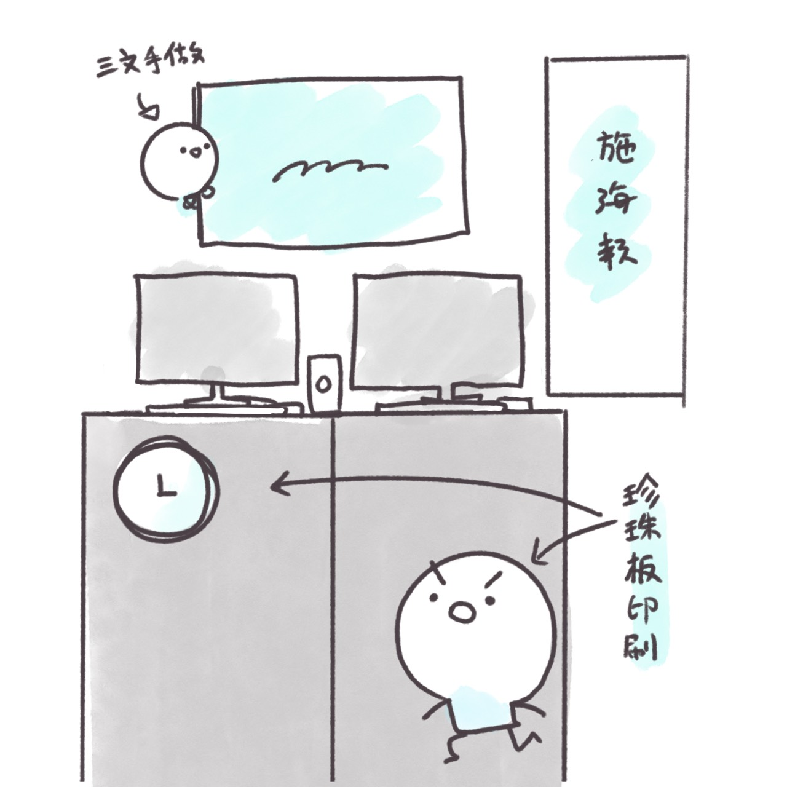
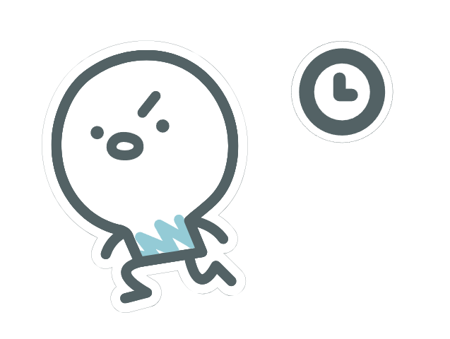
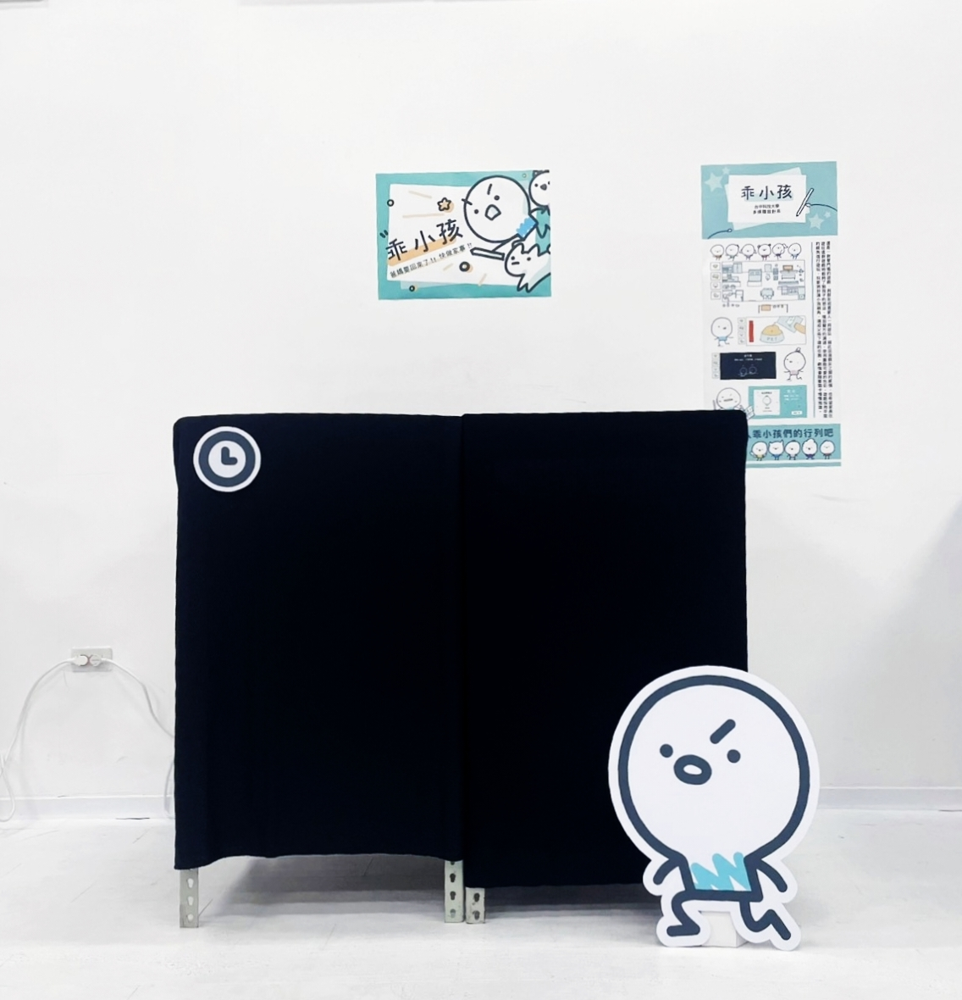
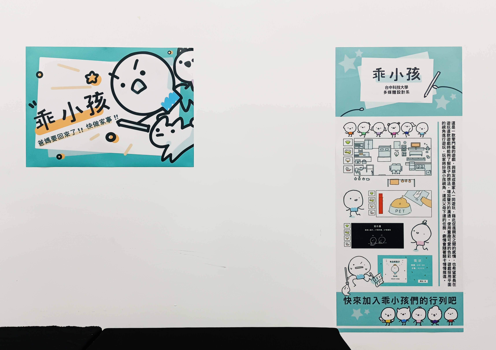
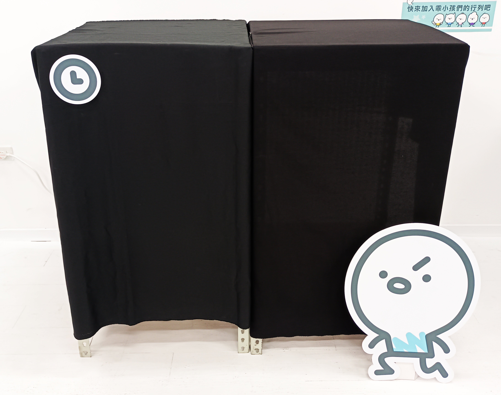

結案報告書
原始企劃內容
原先是多人與單人遊戲且有20個小任務
實際執行情形
改為只有多人遊戲，任務改為6個
展場設計草圖

展場海報與立牌設計

實際展場成果



展場影片
檢討與反思
1.進度檢討
問題：在製作遊戲任務時進度大大落後，無法與設計組達成平衡，其中李亭耘同學負責的遊戲小任務區塊進度較於緩慢，可能是因組員的技術尚未成熟。
解決：不足的部分由陳俞彣同學補上，以及果斷做出適當的工作刪減(任務刪減)。
2.宣傳影片製作檢討
宣傳片與海報每一個人都有製作一版，我們小組是由投票的方式進行決定展出版本。
3.團隊合作檢討
組內的分工明確，且每個人都有盡到自己的工作本分，目前狀況較需要學習與檢討的為程式組的部分，未來會更確定組員的能力範疇去分配工作內容與應變。
4.整體成果與未來改進方向
組內的整體成果我認為可以再更好，但是目前大家合作的配合程度是很好的，只是有些技術的不足，這邊在未來設計遊戲或是專案時，更應注意工作量或是技術成分，去做及時的止損。